Configuring business keys in business processes
- 1. Overview
- 2. Configuring a business key at the start of the process
- 3. Configuring a business key at the start of the process initiated by a message start event.
- 4. Configuring a business key at the process execution stage
- 5. An example of configuring the business keys in a user task
- 6. Displaying business keys in user portals
1. Overview
A business key or business process key is a domain-specific identifier of a business process instance in Camunda BPM. A business key is an additional attribute that identifies business processes and user tasks during modeling.
- Let’s consider an example:
-
We have a process for shipping book orders, and we manage our orders in a secondary database where every order is identified by an ID. When we start the shipping process, we can link the process instance directly to the order by using the order ID as the business key.
To find the process instance, we can simply query by the order ID:
RuntimeService runtimeService = ..; String orderId = ..; ProcessInstance shipmentInstance = runtimeService .createProcessInstanceQuery() .processInstanceBusinessKey(orderId) .singleResult();The orderIdargument is the business key for finding the order.
In reality, shipping an order may be more complex and involve multiple process instances. We can link them all together by the same business key. This way, we can find all process instances related to a particular customer order with a simple query.
Any single attribute or a combination of business-significant attributes of a specific business process or user task can serve as a business key.
Business keys allow users to distinguish one business process or user task from another in the list of business tasks in the user portals.
| For details on business keys, refer to this Camunda blog post: How to Use Business Keys? |
- Business keys use cases
-
During modeling, you can use business keys to:
2. Configuring a business key at the start of the process
To configure a business key at the start of the business process, perform these steps:
-
Open the Camunda Modeler app and create a new BPMN diagram by clicking the
BPMN diagrambutton.A new diagram window opens.

-
Drag the Create Pool/Participant element to the diagram canvas. For details, see Adding the Create pool/Participant element.
Modeling the business process diagram must take place within the Create Pool/Participant element. -
Add and configure the start event:
-
From the toolbar on the left, drag the Create StartEvent element (a circle) to the diagram canvas.


-
Select the Create StartEvent element and configure the start event in the properties panel on the right:
-
In the General tab, configure the main parameters of starting the business process. For details, see Configuring the start event.
-
In the Forms tab > Form Key field, specify the service name of the form whose parameters will be passed to the
submission()function when executing the process.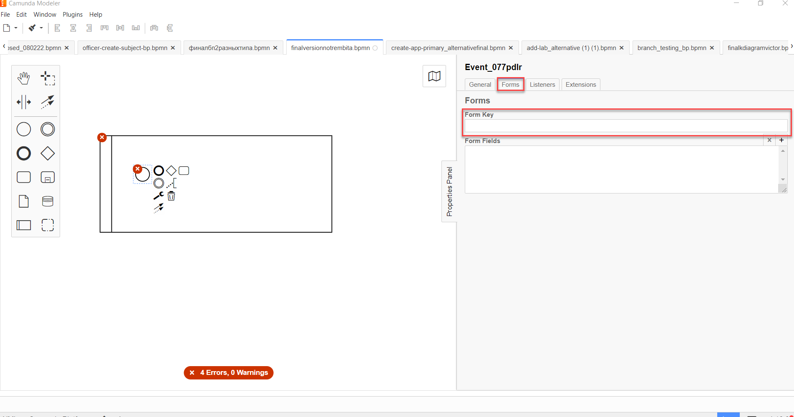 -
In the Extensions tab, configure the business keys parameters:
-
In the Add Property field, click the plus icon and specify the following options:
-
Name: Enter
businessKeyExpression. -
Value: Specify an expression to set the value of the business key using the
submission()function. For details, see The submission() function.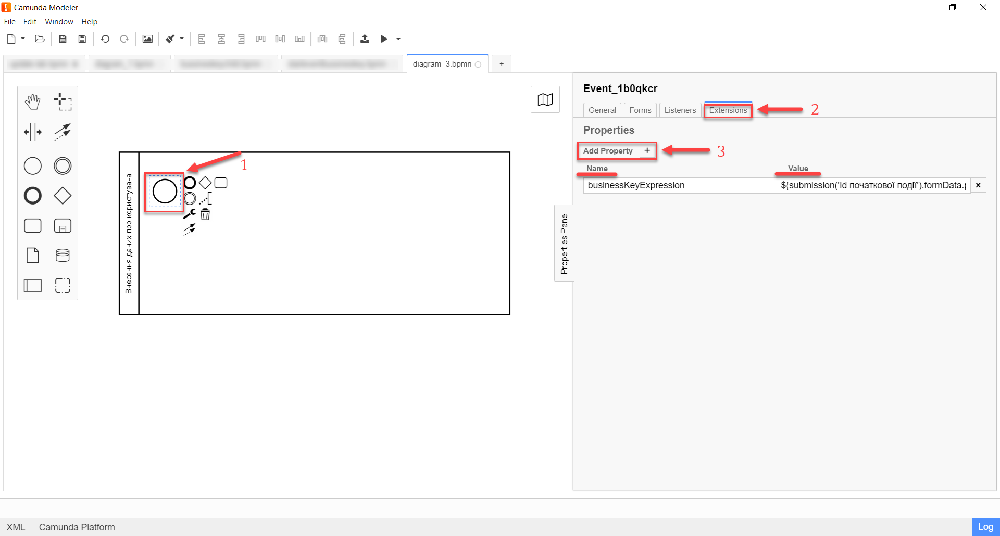Example 2. The submission() function${submission('<start event ID>').formData.prop('<Property Name attribute1>').value()+" "+submission('<start event ID>').formData.prop('<Property Name attribute2>').value()}
-
-
-
To create the
businessKeyExpressionexpression, you need to determine which attribute or combination of attributes will identify this business process.In user portals (for officers and citizens), the result of the
businessKeyExpressionexpression is a text field with concatenated values of the attributes specified in the expression. -
- Let’s consider an example:
-
Let’s configure the business keys in the process of entering a person’s passport data using the
submission()function.
-
When modeling the event, set the
businessKeyExpressionparameter to the following expression:The submission() function with placeholders${submission('<start event ID>').formData.prop('<Property Name attribute1>').value()+" "+submission('start event ID').formData.prop('<Property Name attribute2>').value()}-
The
<Property Name attribute1>placeholder, for example, can correspond to the person’ssurnameparameter. -
The
<Property Name attribute2>placeholder, for example, can correspond to the person’snameparameter. -
The
<start event ID>placeholder must contain the ID of the start event for which the business keys are applied. The ID may be assigned automatically when modeling the event, or it can be defined manually—for example,StartEvent_1.
-
-
After substituting the placeholders, we get the following expression:
The submission() function with proper parameters${submission('StartEvent_1').formData.prop('surname').value()+" "+submission('StartEvent_1').formData.prop('name').value()} -
The resulting business key will be represented by two fields: surname (API
surnameattribute) and name (APInameattribute) in the user forms interface.
3. Configuring a business key at the start of the process initiated by a message start event.
To configure a business key at the start of the process initiated by a message start event, perform these steps:
-
Open the Camunda Modeler app and create a new BPMN diagram by clicking the
BPMN diagrambutton.A new diagram window opens.
-
Drag the Create Pool/Participant element to the diagram canvas. For details, see Adding the Create pool/Participant element.
Modeling the business process diagram must take place within the Create Pool/Participant element. -
Add and configure the start event:
-
From the toolbar on the left, drag the Create StartEvent element (a circle) to the diagram canvas.
-
Select the Create StartEvent element, click the wrench icon, and select the start event type to initiate the business process: Message Start Event.
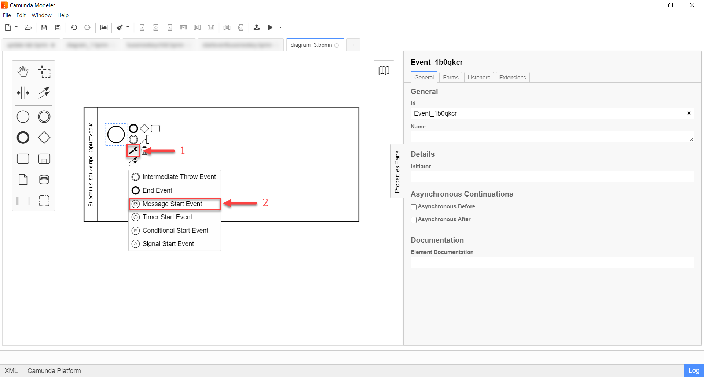
-
Configure the start event in the properties panel on the right:
-
In the General tab, configure the event’s parameters.
For details, see Configuring the message start event. -
In the Extensions tab, configure the business keys parameters:
-
In the Add Property field, click the plus icon and specify the following options:
-
Name: Enter
businessKeyExpression. -
Value: Specify an expression to set the value of the business key using the
submission()function. For details, see The submission() function.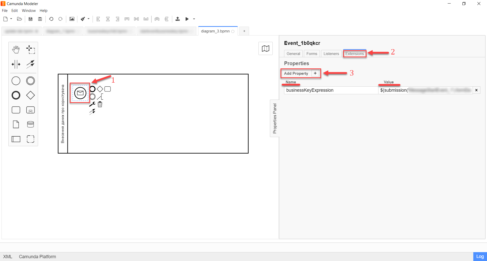
-
-
-
-
For an example of using the business keys via the submission() function, jump to Configuring business keys in the process of entering a person’s passport data.
|
4. Configuring a business key at the process execution stage
You can model and configure a business key at the business process execution stage.
|
Modeling and configuring a business key requires the business process to contain at least one user form (user task or start event). |
To configure a business key at the process execution stage, perform these steps:
-
Add a service task to your business process:
-
Select the task, click the wrench icon (Change type), and select the Service Task item from the menu.
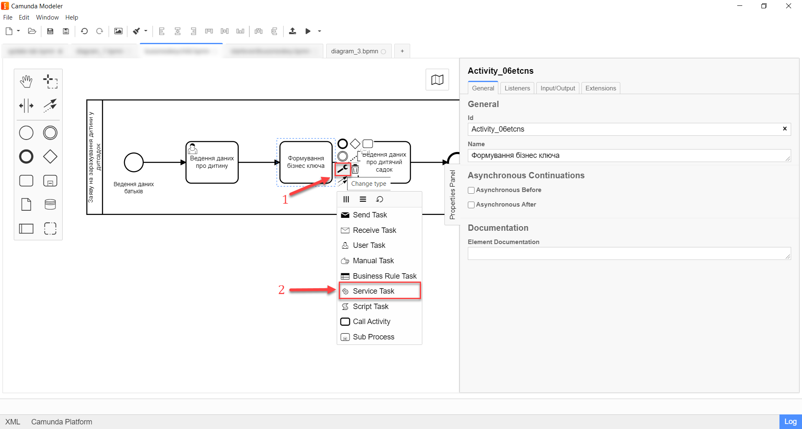
-
-
Select the service task.
-
In the properties panel on the right, open the General tab and go to the templates catalog by clicking the
Open Catalogbutton in the Template field. -
Select the Define process business key template.
-
Click
Applyto confirm your action.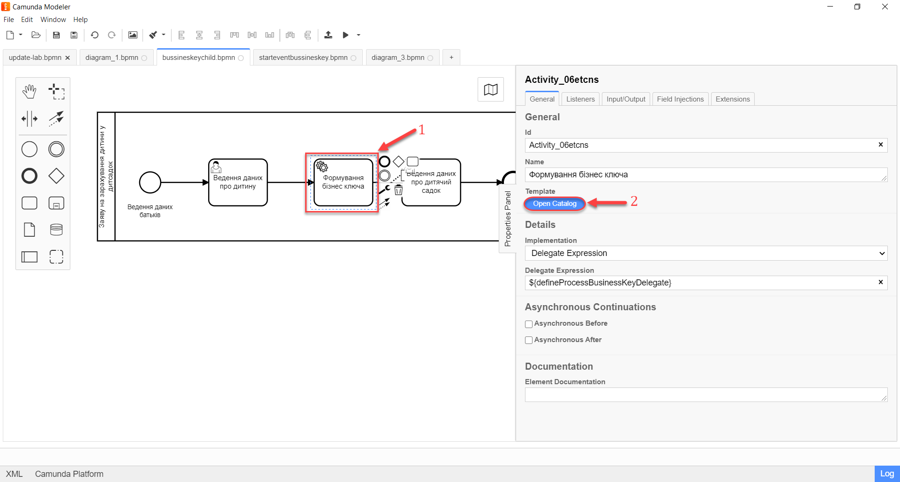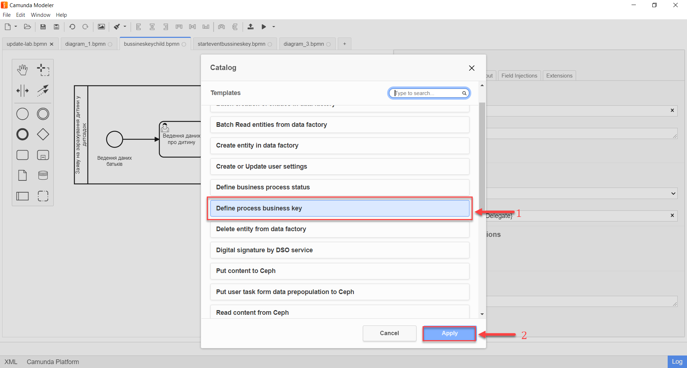 -
In the properties panel, configure the following parameters:
-
Name: Specify the name of the service task—for example,
Service task 1. -
Business key: Specify an expression to set the value of the business key using the
submission()function. For details, see The submission() function.Example 4. The submission() function example${submission('<start event ID/ user form ID>').formData.prop('<Property Name attribute1>').value()+" "+submission('<start event ID/ user form ID>').formData.prop('<Property Name attribute2>').value()}For an example of using the business keys via the submission()function, jump to Configuring business keys in the process of entering a person’s passport data.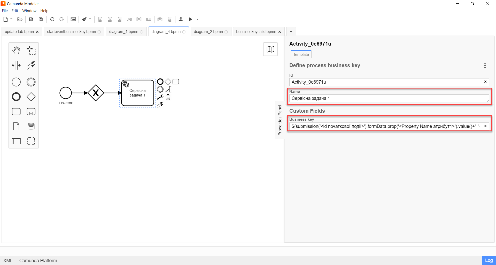
-
As a result, the configured service task becomes available in the business process.
5. An example of configuring the business keys in a user task
5.1. Configuring the business keys using the submission() function
Business process keys configured in the BPMN diagram are displayed in user forms as the users walk through the process.
Let’s consider an example of displaying business keys in a user form using the JUEL submission() function.
| For an example of using this function in the process, jump to Configuring a business key at the start of the process. |
${submission('Usertask').formData.prop('<Property Name attribute1>').value()+" "+submission('Usertask').formData.prop('<Property Name attribute2>').value()}The Usertask parameter is the identifier for the user task User task 1 (see the diagram below).
This way, you can use the attributes from User task 1 for the business keys in Service task 1. The data is configured using the submission() function.
In the Form key field, enter the service name of the previously modeled form: add-usertask.
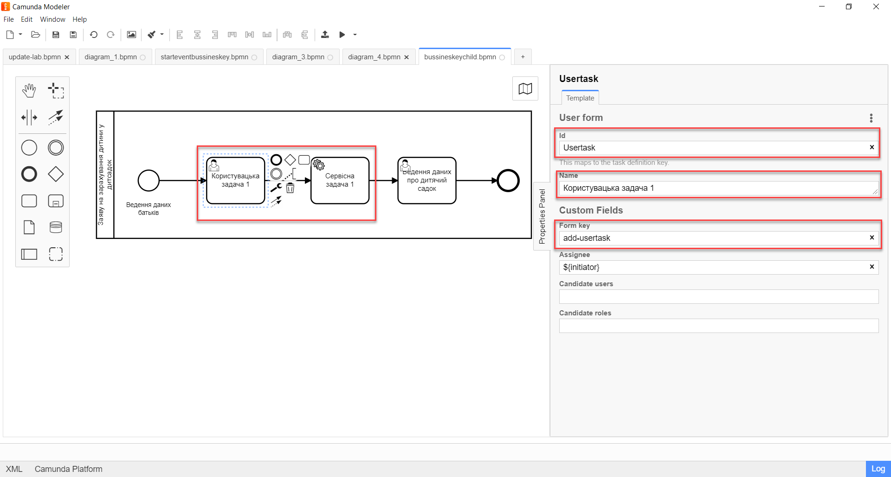
The <Property Name attribute1> and <Property Name attribute2> placeholders are the parameters of the Property Name field used for the user forms' API (the API tab) in the regulations administrator portal.
5.2. Configuring business keys when modeling user forms
| For details, see bp-modeling/forms/registry-admin-modelling-forms.adoc. |
To model user forms for further configuration of business process keys, perform these steps:
-
Sign in to the regulations administrator portal and create a user form for your business process.
-
In the components panel on the left, select the Text Field component and drag it onto the modeling canvas.
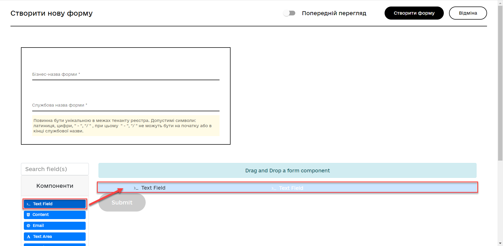
-
In the window that opens, open the Display tab and enter the value of the
<Property Name attribute1>variable in the Label field:Surname.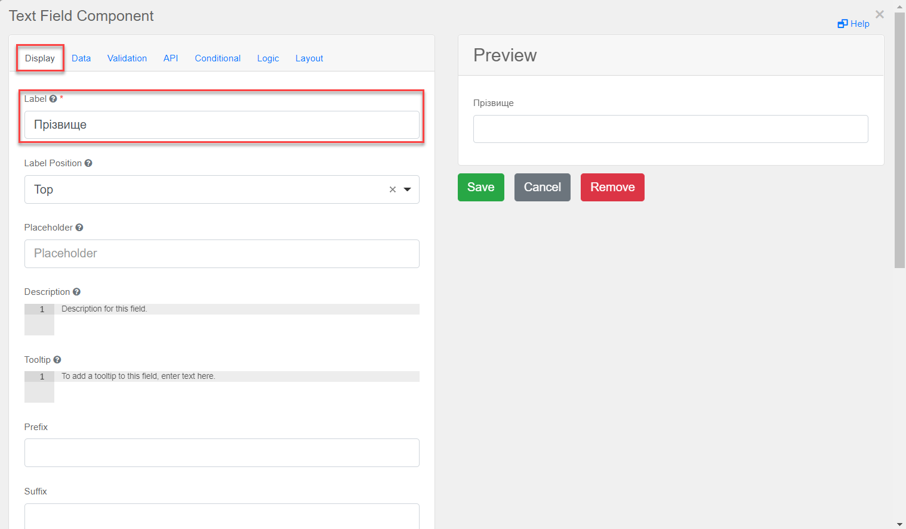
-
In the API tab > Property Name field, enter the service name of the
Surnameattribute, which will be used in thesubmission()function when modeling the business process in Camunda, i.e., the parameter for the API endpoint—in our example,surname. -
Click
Saveto save your changes.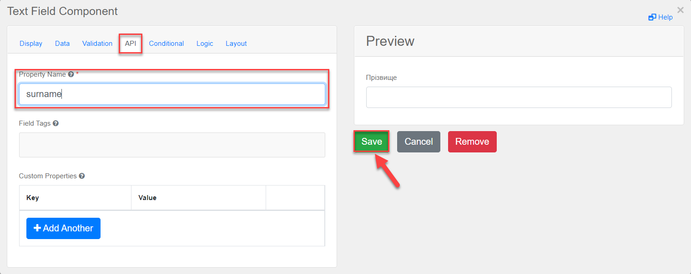
-
In the components panel on the left, select a new Text Field component and drag it onto the modeling canvas.
-
In the window that opens, open the Display tab and enter the value of the
<Property Name attribute2>variable in the Label field:Name.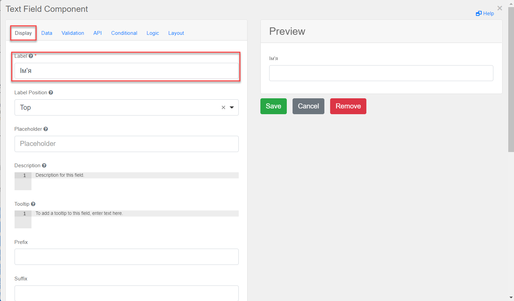
-
In the API tab > Property Name field, enter the service name of the
Nameattribute, which will be used in thesubmission()function when modeling the business process in Camunda, i.e., the parameter for the API endpoint—in our example,name. -
Click
Saveto save your changes.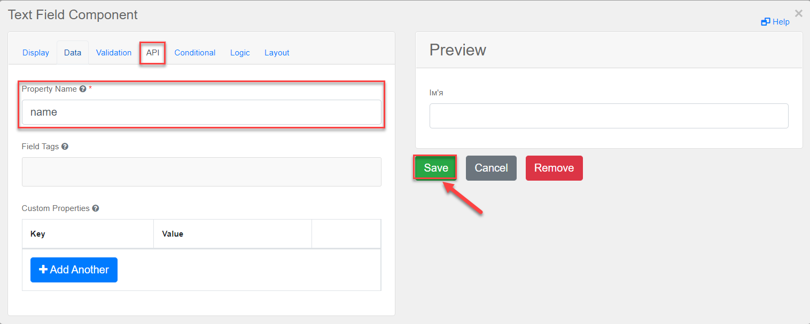
As a result, we get a business process form with two fields for user data, which will act as business keys (
surnameandname). -
Click the
Create formbutton in the upper right corner to save your user form.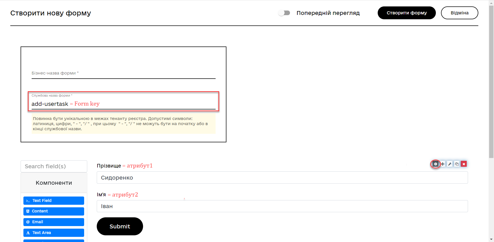
-
Link your user form to your business process using the form’s service name:
-
When modeling the business process, enter the value of the
Form’s service nameparameter into the Form key field:add-usertask.
-
6. Displaying business keys in user portals
As mentioned before, a business key is an additional attribute that identifies business processes and user tasks during modeling.
Business keys are defined and configured in forms and are used when modeling processes using JUEL functions. As a result, the keys are displayed in the user portals as identifiers of services or tasks.
| Business keys allow users to distinguish the business processes they are responsible for or single out a specific task in these processes among thousands of other records available in their accounts. |
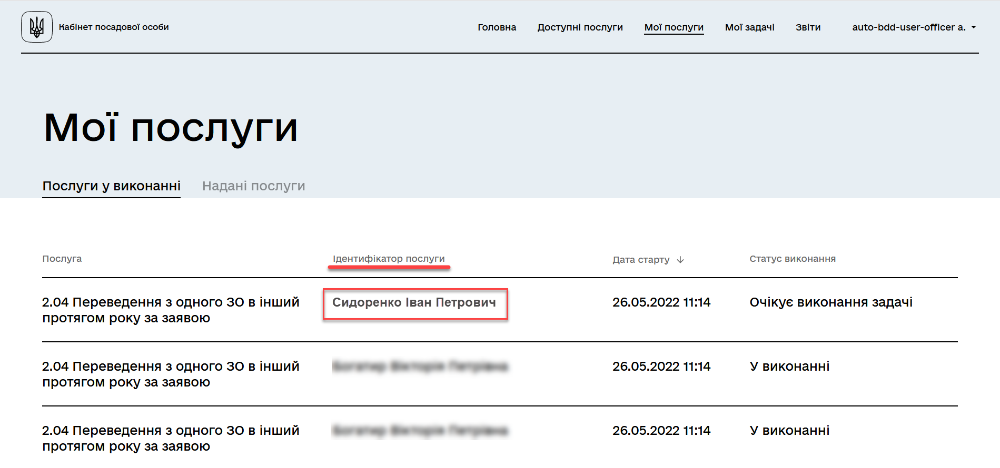